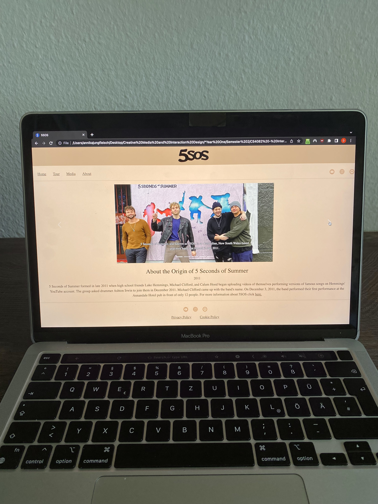

Live Bus Timetable (2025)
Tools: FreeCAD, Bambu StudioThis project addressed the issue of inaccessible real-time bus arrival information for local commuters. I designed and 3D printed a custom casing and a vertical stand for an ESP32 and touchscreen display, with a strong focus on user interaction and display legibility. The device was programmed to fetch and display real-time bus arrival data, prioritising a clear information hierarchy and quick glanceability. The outcome is a functional, user-friendly physical display that provides immediate, real-time bus information, significantly enhancing commuter convenience. This endeavour highlights my capabilities in integrating hardware design with interactive data display for practical, real-world applications.
Dystopian Work Monitoring Device (2025)
Tools: (FreeCAD, Bambu Studio, Mural, Figma)This critical design project involved the conception and fabrication of a device that challenges existing norms of workplace monitoring. The artefact, housed within a custom 3D-printed case, serves as a tangible commentary on surveillance in contemporary work environments. This project allowed me to explore critical design methodologies, combining physical prototyping with conceptual exploration to provoke thought and discussion around technological implications.


LitNest - Reading Tracking Application (2024)
Tools: Figma, MuralAs the lead of this group project, I guided the development of "LitNest," an intuitive reading tracking application designed to help users efficiently manage their reading progress and discover new books. My role encompassed the entire design process, from initial conception to high-fidelity prototyping. I conducted comprehensive market research and competitor analysis to identify key user needs and design opportunities. This insight informed the development of user flows, wireframes, and interactive prototypes in Figma, which were iteratively refined based on user feedback. The final outcome is a seamless user experience for logging books, tracking reading progress, and facilitating 'buddy reads,' demonstrating my proficiency in user-centred design and collaborative project leadership.
LearnBetter (2023)
Tools: Mural, FigmaDeveloped as a group project during my first year, "LearnBetter" is a Virtual Learning Environment (VLE) application designed to support university students during remote study. The app features eight distinct functionalities designed to mitigate distractions and foster motivation. Notably, "LearnBetter" assists students in tracking their academic performance, provides avenues for accessing necessary help, limits distracting phone activities, and offers a virtual group learning option. Its core purpose is to minimise digital distractions and enhance student engagement and access to support resources while studying remotely.



Musicians Website (2023)
Tools: HTML, CSS, JavaScriptThis project involved a conceptual redesign of the official online presence for the Australian pop-rock band 5 Seconds of Summer (5SOS). The objective was to resolve identified user experience challenges that arose following an album release. The website's navigation is structured with four key tabs: a "Home" page providing an introduction to 5SOS and essential links to their external platforms, a "Tour" page detailing forthcoming concert dates and facilitating ticket acquisitions, a "Media" page offering comprehensive background on each album in reverse chronological order, accompanied by a five-image carousel for each, and an "About" page summarising band members and their roles. This project showcases my proficiency in web development and user experience optimisation.
Flat Pack Lamp (2023)
Tools: Cardboard, Acrylic paintThis lamp was developed as a final project for a Design Studio module, with the constraint of using only flat materials and no external fixings. The design drew inspiration from the organic form of a jellyfish. The project followed a comprehensive five-stage process: inspiration, exploration, experimentation, concept development, and final submission. Each lamp piece was hand-painted in aquamarine and silver, deliberately evoking the colours of the sea and reinforcing the initial jellyfish inspiration. This piece exemplifies my approach to material constraints and biomimicry in design.
Dragon Sculpture (2019)
Tools: Clay, 3D printing, SculptrisCrafted during my exchange year in the United States, this dragon sculpture is a fusion of traditional sculpting techniques and modern digital fabrication. The dragon's head, meticulously sculpted from clay, is brought to life with a vivid green colour. Complementing the traditional element, 3D-printed horns were integrated, adding an enchanting and contemporary touch to the overall design. This project showcases my versatility in combining different artistic and fabrication methods.